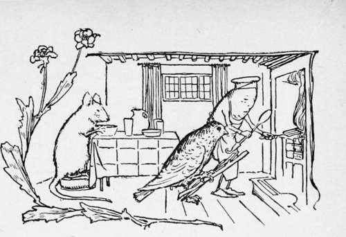

The Wishing Table The Gold Ass And The Cudgel. Part 3
Description
This section is from the book "Household Tales by Brothers Grimm", by Brothers Grimm. Also available from Amazon: Household Tales by Brothers Grimm.
The Wishing Table The Gold Ass And The Cudgel. Part 3
Having finished his meal, the stranger asked for his bill, and the landlord thinking he might safely overcharge such a rich customer, asked for two more gold pieces. The miller felt in his pocket but found he had spent all his gold. "Wait a minute," he said to the landlord, "I will go and fetch some more money." Whereupon he went out, carrying the table-cloth with him.
This was more than the landlord's curiosity could stand, and he followed his guest to the stable. As the latter bolted the door after him, he went and peeped through a hole in the wall, and there he saw the stranger spread the cloth under his ass, and heard him say, " Bricklebrit," and immediately the floor was covered with gold pieces which fell from the animal's mouth.
"A good thousand, I declare," cried the host, "the gold pieces do not take long to coin! it's not a bad thing to have a money-bag like that."
The guest settled his account and went to bed. During the night the landlord crept down to the stable, led away the gold-coining ass, and fastened up another in its place.
Early the next morning the young miller went off with his ass, thinking all the time that he was-leading his own. By noonday he had reached home, where his father gave him a warm welcome.
"What have you been doing with yourself, my son?" asked the old man.
"I am a miller, dear father," he answered.
"And what have you brought home with you from your travels ?"
" Nothing but an ass, father."
" There are asses enough here," said the father, " I should have been better pleased if it had been a goat."
"Very likely," replied the son, "but this is no ordinary ass, it is an ass that coins money; if I say 'Bricklebrit" to it, a whole sackful of gold pours тот its mouth. Call all your relations and friends ogether, I will turn you all into rich people."
"I shall like that well enough," said the tailor, "for then I shall not have to go on plaguing myself with stitching," and he ran out himself to invite his neighbours. As soon as they were all assembled, the young miller asked them to clear a space, and he then spread his cloth and brought the ass into the room. " Now see," said he, and cried "Bricklebrit," but not a single gold piece appeared, and it was evident that the animal knew nothing of the art of gold-coining, for it is not every ass that attains to such a degree of excellence.
The poor young miller pulled a long face, for he saw that he had been tricked: he begged forgiveness of the company, who all returned home as poor as they came. There was nothing to be done now but for the old man to go back to his needle, and the young one to hire himself to a miller.
The third son had apprenticed himself to a turner, which, being a trade requiring a great deal of skill, obliged him to serve a longer time than his brothers. He had, however, heard from them by letter, and knew how badly things had gone with them, and that they had been robbed of their property by an innkeeper on the last evening before reaching home.
When it was time for him to start as a journeyman, his master, being pleased with his conduct, presented him with a bag, saying as he did so, "You will find a cudgel inside."
"The bag I can carry over my shoulder, and it will no doubt be of great service to me, but of what use is a cudgel inside, it will only add to the weight ?"
" I will explain," said the master, " if any one at any time should behave badly to you, you have only to say, ' Cudgel, out of the bag,' and the stick will jump out, and give him such a cudgelling, that he will not be able to move or stir for a week afterwards, and it will not leave off till you say, 'Cudgel, into the bag.'"
The young man thanked him, hung the bag on his back, and when any one threatened to attack him, or in any way to do him harm, he called out, "Cudgel, out of the bag," and no sooner were the words said than out jumped the stick, and beat the offenders soundly on the back, till their clothes were in ribbons, and it did it all so quickly, that the turn had come round to each of them before he was aware.
It was evening when the young turner reached the inn where his brothers had been so badly treated. He laid his bag down on the table, and began giving an account of all the wonderful things he had seen while going about the world.
" One may come across a wishing-table," he said, " or an ass that gives gold, and such like; all very good things in their way, but not all of them put together are worth the treasure of which I have possession, and which I carry with me in that bag."
The landlord pricked up his ears. " What can it be," he asked himself, "the bag must be filled with precious stones; I must try and get hold of that cheaply too, for there is luck in odd numbers."
Bed-time came, and the guest stretched himself out on one of the benches and placed his bag under his head for a pillow. As soon as the landlord thought he was fast asleep, he went up to him, and began gently and cautiously pulling and pushing at the bag to see if he could get it away and put another in its place.
But the young miller had been waiting for this and just as the landlord was about to give a good last pull, he cried, "Cudgel, out of the bag," and the same moment the stick was out, and beginning its usual dance. It beat him with such a vengeance that the landlord cried out for mercy, but the louder his cries, the more lustily did the stick beat time to them, until he fell to the ground exhausted.
"If you do not give back the wishing-table and the gold ass," said the young turner, " the game shall begin over again."
"No, no," cried the landlord in a feeble voice, "I will gladly give every thing back, if only you will make that dreadful demon of a stick return to the bag."
"This time," said the turner, "I will deal with you according to mercy rather than justice, but beware of offending in like manner again." Then he cried, "Cudgel, into the bag," and let the man remain in peace.
The turner journeyed on next day to his father's house, taking with him the wishing-table and the gold ass. The tailor was delighted to see his son again, and asked him, as he had the others, what trade he had learnt since he left home.
"I am a turner, dear father," he answered.
"A highly skilled trade," said the tailor, "and what have you brought back with you from your travels ?"
"An invaluable thing, dear father," replied the son, " a cudgel."
"What! a cudgel!" exclaimed the old man, "that was certainly well worth while, seeing that you can cut yourself one from the first tree you come across."
"But not such a one as this, dear father; for, if I say to it, " Cudgel, out of the bag," out it jumps, and gives any one who has evil intentions towards me such a bad time of it, that he falls down and cries for mercy. And know, that it was with this stick that I got back the wishing-table and the gold ass, which the dishonest inn-keeper stole from my brothers. Now, go and call them both here, and invite all your relations and friends, and I will feast them and fill their pockets with gold."
The old tailor was slow to believe all this but nevertheless he went out and gathered his neighbours together. Then the turner put down a cloth, and led in the gold ass, and said to his brother, " Now, dear brother, speak to him." The miller said " Bricklebrit," and the cloth was immediately covered with gold pieces, which continued to pour from the ass's mouth until everyone had taken as many as he could carry. (I see by your faces that you are all wishing you had been there).
Then the turner brought in the wishing-table, and said, "Now, dear brother, speak to it." And scarcely had the joiner cried, "Table, serve up a meal," than it was covered with a profusion of daintily dressed meats. Then the tailor and his guests sat down to a meal such as they had never enjoyed before in their lives, and they all sat up late into the night, full of good cheer and jollity.
The tailor put away his needle and thread, his yard-measure and his goose, and he and his three sons lived together henceforth in contentment and luxury.
Meanwhile, what had become of the goat, who had been the guilty cause of the three sons being driven from their home ? I will tell you.
She was so ashamed of her shaven crown, that she ran and crept into a fox's hole. When the fox came home, he was met by two large glittering eyes that gleamed at him out of the darkness, and he was so frightened that he ran away. The bear met him, and perceiving that he was in some distress, said, " What is the matter, brother Fox, why are you pulling such a long face ? " "Ah ! " answered Redskin, " there is a dreadful animal sitting in my hole, which glared at me with fiery eyes."
"We will soon drive him out," said the Bear, and he trotted back with his friend to the hole and looked in, but the sight of the fiery eyes was quite enough for him, and he turned and took to his heels.
The bee met him and noticing that he was somewhat ill at ease, said, " Bear, you look remarkably out of humour, where have you left your good spirits ? " " It's easy for you to talk," replied the bear, "a horrible animal with red goggle-eyes is sitting in the fox's hole, and we cannot drive it out."
The bee said, " I really am sorry for you, Bear; I am but a poor weak little creature that you scarcely deign to look at in passing, but, for all that, I think I shall be able to help you."
With this the bee flew to the fox's hole, settled on the smooth shaven head of the goat, and stung her so violently, that she leaped high into the air, crying, " Nan, nan! " and fled away like a mad thing into the open country; but no one, to this hour, has found out what became of her after that.

Continue to:
- prev: The Wishing Table The Gold Ass And The Cudgel. Part 2
- Table of Contents
- next: The Mouse, The Bird, And The Sausage
Tags
fairy tales, children's stories, brothers grimm, household tales